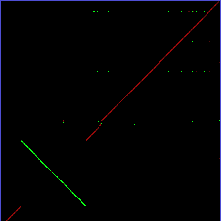
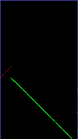
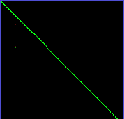
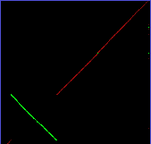
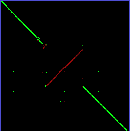
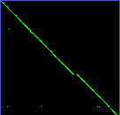
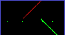
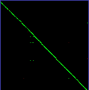

GenomeOT
Genomes Over Time
Genomes Over Time
Human vs. Chimp, one million base pairs per pixel
Input- FASTA files for each chromosome
- Configuration file (see below)
- Image files, 1M bp per pixel
Chromosome 1
{kind=link}
Chromosome 2
 13
13
Chromosome 2
12{kind=link}
Chromosome 3
 2
2
Chromosome 4
 5
5
Chromosome 5
6{kind=link}
Chromosome 6
4{kind=link}
Chromosome 7
 3
3
Chromosome 8

Chromosome 9
 15
15
Chromosome 10
9{kind=link}
Chromosome 11
 14
14
Chromosome 12
11{kind=link}
Chromosome 13
17{kind=link}
Chromosome 14
 7
7
Chromosome 15
 7
7
Chromosome 16
 20
20
Chromosome 17
 16
16
Chromosome 17
 6
6
Chromosome 18

Chromosome 19
{kind=link}
Chromosome 20
10{kind=link}
Chromosome 21
 3
3
Chromosome 22
 10
10
Chromosome X
{kind=link}
Configuration File
Lists path to each pair of chromosomes to compare.
...
Authors and Contributors
You can @mention a GitHub username to generate a link to their profile. The resulting <a> element will link to the contributor's GitHub Profile. For example: In 2007, Chris Wanstrath (@defunkt), PJ Hyett (@pjhyett), and Tom Preston-Werner (@mojombo) founded GitHub.
Support or Contact
Having trouble with Pages? Check out the documentation at http://help.github.com/pages or contact support@github.com and we’ll help you sort it out.